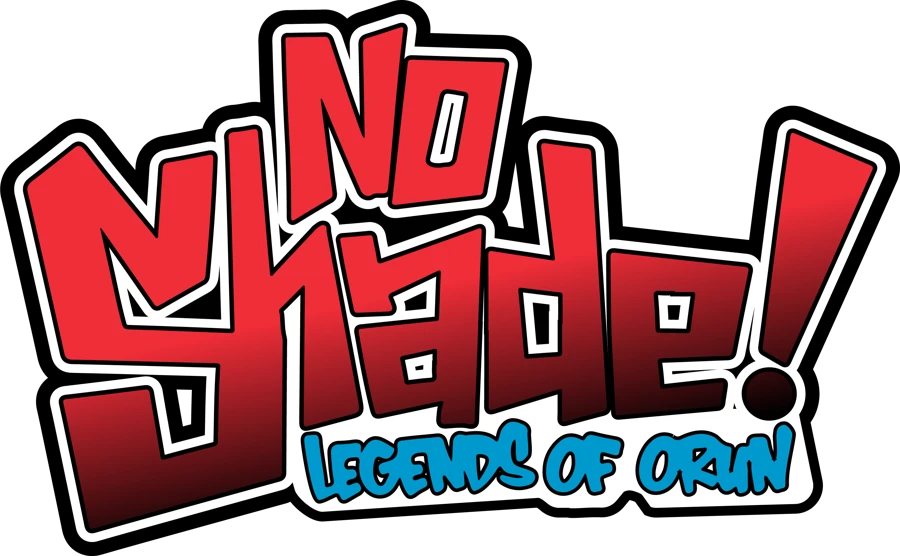

Work sample · Shaun HarrisonNo Shade! Live: The Ball at Orun
A free vogue ball in Harlem, June 2027, built around No Shade! Legends of Orun, an original animated series where voguing is power. This three-minute sample has two parts: the series trailer, then a reel of live events I've art-directed and produced.
Part 1 · 0:04The series
The trailer for No Shade! Legends of Orun. A new animated scene from the series premieres at the ball.
Part 2 · 1:32Live events
Apollo Theater Young Patrons Sessions, Harlem, 2017 (art director and producer), and the Hollywood Unlocked Impact Awards, 2022–2025 (art director).